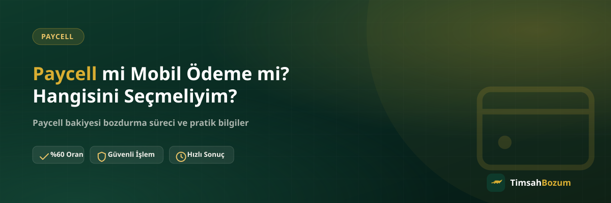

Elinde hem Paycell bakiyesi hem de hattına tanımlı mobil ödeme bakiyesi varsa, "hangisini bozdurmak daha mantıklı" sorusu doğal olarak akla geliyor. İki hizmet birbirine benziyor gibi görünse de farklı altyapılarla çalışıyor ve bozdurma oranları da bu farka göre değişiyor. Bu yazıda Paycell ile mobil ödeme bakiyesi arasındaki temel farkları ve hangi durumda hangisini seçmenin daha avantajlı olduğunu anlatıyoruz.
Paycell ve Mobil Ödeme Arasındaki Temel Fark Nedir?
Mobil ödeme bakiyesi, kullandığın operatörün (Vodafone, Türk Telekom veya Turkcell) hattına tanımlı ve faturana ya da kontörüne yansıyan bir bakiye türüdür. Paycell ise Turkcell'in ayrı bir finansal uygulaması olan dijital bir cüzdandır; Turkcell hattı olmayan kullanıcılar da Paycell hesabı açabilir. Yani ikisi aynı şey değil, farklı sistemlerde tutulan iki ayrı bakiye türü.
Paycell Bakiyesi Nedir, Nereden Gelir?
Paycell bakiyesi; hediye, kampanya, para transferi veya uygulama içi yükleme yoluyla Paycell cüzdanına gelen bir bakiyedir. Bu bakiye operatörden bağımsız çalışır, hattın hangi şebekede olduğuna bakılmaz. Paycell bakiyesinin nasıl oluştuğuna dair daha fazla bilgiyi Paycell bakiyesi nasıl oluşur, nereden gelir? başlıklı yazımızda bulabilirsin.
Mobil Ödeme Bakiyesi Nedir, Nereden Gelir?
Mobil ödeme bakiyesi ise hattının operatörü üzerinden, genelde bir uygulama içi satın alma veya kampanya sonrası faturalı/faturasız hesabına yansıyan bakiyedir. Bu bakiye doğrudan hattına bağlıdır ve hangi operatörü kullandığına göre işleyişi küçük farklar gösterebilir. Konuyu detaylı anlatan Mobil ödeme bakiyesi nedir, nasıl oluşur? yazımıza göz atabilirsin.
Hangisinin Bozdurma Oranı Daha Yüksek?
Güncel referans oranlara göre Paycell bozdurma oranı %60 seviyesinde, Vodafone ve Türk Telekom mobil ödeme bozdurma oranı %50 seviyesinde işliyor. Turkcell mobil ödeme bakiyesinde durum biraz farklı: Turkcell hattından doğrudan mobil ödeme bozdurma oranı %30 iken, müşterinin bir Paycell hesabı varsa işlem Paycell üzerinden %60 oranla değerlendirilebiliyor. Bu da Turkcell kullanıcıları için Paycell hesabı üzerinden işlem yapmanın neden daha avantajlı görünebileceğini açıklıyor. Oranlar piyasa koşullarına göre değişebildiği için işlem öncesi güncel oranı WhatsApp'tan teyit etmek en sağlıklısı.
İkisini Aynı Anda Bozdurabilir misin?
Evet, elinde hem Paycell bakiyesi hem de mobil ödeme bakiyesi varsa ikisini de tek bir WhatsApp görüşmesinde bildirip ayrı ayrı işleme alabilirsin. Her bakiye kendi oranıyla değerlendirilir, biri diğerinin oranını etkilemez. Tek fark, hangi bakiyenin hangi hizmete ait olduğunu mesajında net şekilde belirtmen - bu da karışıklığı önler ve süreci hızlandırır.
Hangi Durumda Hangisini Seçmelisin?
Elindeki bakiye zaten belli bir sisteme ait olduğu için aslında "seçim" senin elinde değil, bakiyenin hangi hesapta durduğuyla ilgili. Paycell uygulamasında görünen bir bakiyen varsa bu Paycell bozdurma kapsamına girer. Hattının faturasına veya kontörüne yansıyan bir bakiye varsa bu mobil ödeme bozdurma kapsamına girer. Asıl karar noktası, Turkcell hattı kullanan ve aynı zamanda Paycell hesabı olan kullanıcılar için ortaya çıkıyor: bu durumda Paycell üzerinden işlem yapmak daha yüksek oran anlamına gelebiliyor.
Paycell Hesabın Yoksa Ne Olur?
Paycell hesabın yoksa ve elindeki bakiye sadece hattına tanımlı mobil ödeme bakiyesiyse, bu durumda ekstra bir adım gerekmiyor; doğrudan mobil ödeme bozdurma kapsamında işlem yapılır. Paycell hesabı açmak zorunlu değil, sadece Turkcell hattı olan ve zaten bir Paycell hesabı bulunan kullanıcılar için oran karşılaştırması yapmaya değer bir seçenek oluyor. Vodafone veya Türk Telekom hattı kullanıyorsan bu karşılaştırma seni ilgilendirmez, çünkü Paycell bakiyesi ile hat bakiyesi birbirinin yerine geçmez; sadece aynı kişinin elinde her iki bakiye türü de varsa iki ayrı işlem olarak değerlendirilirler.
Oranları Karşılaştırırken Nelere Dikkat Etmeli?
Sitede paylaşılan oranlar genel bir referans niteliğinde, güncel rakamlar işlem anında değişebiliyor. Bu yüzden "Paycell %60, mobil ödeme %50" diye ezbere karar vermek yerine, elindeki bakiyeyi WhatsApp'tan bildirip güncel oranı teyit etmek en sağlıklı yol. Özellikle Turkcell hattı ve Paycell hesabı birlikte olan kullanıcılar için oran farkı küçük görünse de, bakiye tutarı büyüdükçe bu fark eline geçen tutarı ciddi şekilde değiştirebilir.
Yanlış Bakiye Türünü Bildirirsem Ne Olur?
Paycell bakiyesi ile mobil ödeme bakiyesini birbirine karıştırıp yanlış bildirmen işlemi iptal etmez, sadece bir adım geciktirir. Ekran görüntüsünü gördüğümüzde bakiyenin hangi sisteme ait olduğunu zaten ayırt edebiliyoruz; gerekirse doğru bilgiyi tekrar sormamız senin için ekstra bir şey yapmanı gerektirmez. Yine de ilk mesajında doğru bakiye türünü belirtmen, süreci tek turda tamamlamanın en pratik yolu. Faturalı ve faturasız hatlarda mobil ödeme bakiyesinin işleyişi de küçük farklar gösterebiliyor; bu konuyu faturalı ve faturasız hatlarda mobil ödeme bozdurma farkı yazımızda daha detaylı ele aldık.
Bozdurma Süreci İkisinde de Aynı mı İşliyor?
Her iki hizmet de bakiye tabanlı olduğu için süreç büyük ölçüde aynı: güncel bakiyeni gösteren bir ekran görüntüsünü WhatsApp'tan paylaşırsın, oranı teyit edersin, onay sonrası ödemen WhatsApp üzerinden görüşülen yöntemle yapılır. Üyelik, form doldurma veya kimlik belgesi istenmez, hesabına erişim de talep edilmez. Her iki bakiye türünde de bakiyenin tamamını değil, istediğin bir kısmını bozdurmayı seçebilirsin; bu ikisi de kod tabanlı hizmetlerden (Razer Gold, iTunes gibi) ayıran önemli bir fark.
Sık sorulan sorular
İlgili Yazılar
- Paycell Bakiyesi Nasıl Oluşur, Nereden Gelir?
- Mobil Ödeme Bakiyesi Nedir, Nasıl Oluşur?
- Turkcell Hattı Olmayanlar Paycell Bakiyesi Bozdurabilir mi?
Elinde hem Paycell hem mobil ödeme bakiyesi varsa, hangisinin hangi oranla değerlendirileceğini netleştirmenin en hızlı yolu WhatsApp hattımızdan güncel oranı teyit etmek. İki bakiyeni de tek mesajda bildirirsen süreç tek turda ilerler.